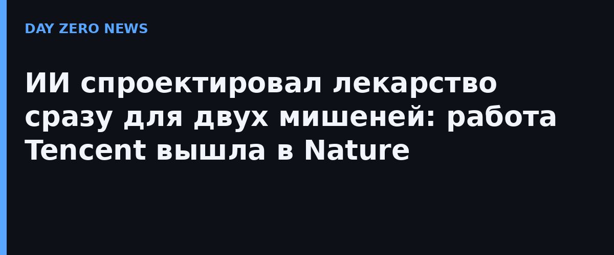

25 ноября в основном журнале Nature вышла статья лаборатории Tencent AI for Life Sciences: платформа ORIDTP с нуля создаёт терапевтические пептиды, которые действуют сразу на две терапевтические мишени. Обычная разработка таких молекул буксует на двух проблемах — низкая доля удачных дизайнов и слабая активность. ORIDTP объединяет перенос знаний с одной мишени, обучение с подкреплением на две мишени и гибкое моделирование связывания пептидов, замыкая цикл «расчёт — эксперимент — обратная связь».
Первым делом платформа занялась агонистами рецепторов GLP-1 и глюкагона — той самой пары мишеней, на которую работают современные препараты для снижения веса. Шесть спроектированных молекул превзошли по активности сильнейшие природные лиганды каждого рецептора; лидер GA-Dual.R5.S3 вызвал заметное снижение веса и улучшение уровня сахара у мышей с диетически вызванным ожирением и выраженный противодиабетический эффект на модели db/db — без тошноты и отвращения, которые сильно портят жизнь пациентам на существующих препаратах.
Второй полигон доказал, что метод не заточен под одну задачу: в режиме zero-shot платформа предложила двойные ингибиторы иммунных контрольных точек PD-1 и CTLA-4. Из 15 спроектированных пептидов 8 заблокировали оба взаимодействия, а три показали эффект в живом организме. Лучший из них, IC-Dual.P3, уменьшил объём опухоли на 94,2% относительно контроля у мышей с «очеловеченными» мишенями.
Вся схема меняет логику поиска лекарств: вместо слепого перебора библиотек молекул — небольшая серия точечных дизайнов. На проверку онкологической партии ушла всего пятнадцать молекул, и больше половины оказались активны по обеим мишеням. ORIDTP уже развёрнута в научно-исследовательской платформе Tencent Health BioNexus и доступна научному сообществу.
Честная оговорка: работа осталась на доклинической стадии, человеческих испытаний не было. Но сама демонстрация — две принципиально разные болезни, дизайн с нуля, публикация в Nature — редкий случай, когда ИИ-платформа для разработки лекарств проходит рецензирование главного научного журнала мира.